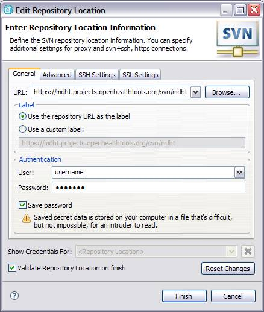
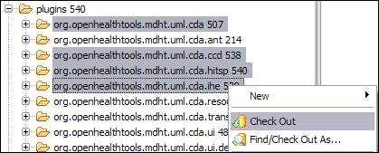

John T.E. Timm, IBM Research
David A. Carlson, Veterans Health Administration
The next step is to download the CDA models and runtime from the software repository at MDHT. Using the subversion client switch to the SVN Browsing Perspective and create a new repository location as show below:
Repository Location: http://mdht.projects.openhealthtools.org/svn/mdht

Where the username and password fields are the login used to sign in at the OHT website. Check out the following plug-ins into your workspace (as shown below):
core/plugins/org.openhealthtools.mdht.uml.hl7.datatypes
core/plugins/org.openhealthtools.mdht.uml.hl7.vocab
cda/plugins/org.openhealthtools.mdht.uml.cda
cda/plugins/org.openhealthtools.mdht.uml.cda.ccd
cda/plugins/org.openhealthtools.mdht.uml.cda.ihe
cda/plugins/org.openhealthtools.mdht.uml.cda.hitsp
